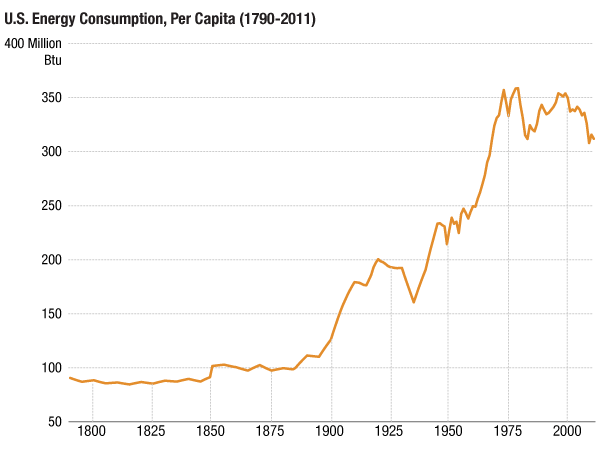
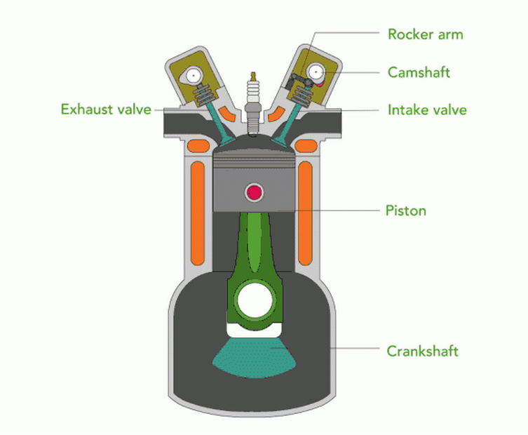
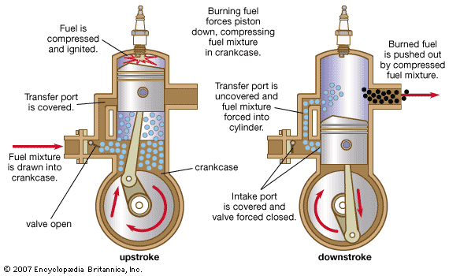
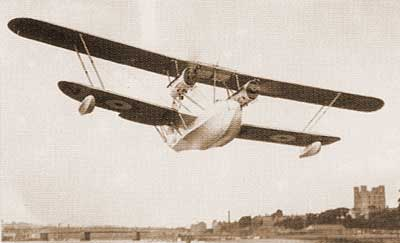

2nd industrial revolution
The increasing popular demands.
As the population increased tremendously after the first industrial revolution, people's demands increased proportionally,
and it wasn't only about basic necessities like food and shelther. The accessories, commodities healthcare, public transport,
clothing and even entertainment's demand also exploded. So the consumption have increased drastically, so now we needed
to maximize theproduction output with optimal quality within the shortest possible timeframe.

Things started to speed up thanks to number of key inventions, such as :
internal combustion engines,

gasoline engines,

aeroplanes,

or again chemical fertilisers.
All inventions that helped us go faster and do more.
And advancements in science weren’t limited to the laboratory. Scientific principles were
brought right into the factories. Most notably, the assembly line, which effectively powered
mass production. By the early part of the 20th century, Henry Ford’s company was mass producing
the groundbreaking Ford Model T, a car with a gasoline engine built on an assembly line in his
factories.
People follow the jobs, and the early 1900s saw workers leaving their rural homes behind to move to urban areas and factory jobs.
By 1900, 40% of the US population lived in cities, compared to just 6% in 1800. Along with increasing urbanization, inventions such
as electric lighting, radio, and telephones transformed the way people lived and communicated.
It was mainly during this industrial revolution, the second one, hastened the transition to the modern world.
However it would be also during this industrial revolution that the world would see the dark face humanity.
One of these examples could be the WW1 and especially the WW2, which saw a huge production of weapons during this
period of time...
Also scientists weren't only creating benefits for humans. Fritz Harbor, the man who invented the Haber-Bosch process that
takes nitrogen from the air and turns it into fertiliser... also invented poison gas that killed allied soldiers during WW1.
So at conclusion, these technological achievements were a paradox between goods and bads.
Source:
The Four industrial revolutions Salesforce Trailhead. Available at:
https://trailhead.salesforce.com/content/learn/modules/learn-about-the-fourth-industrial-revolution/meet-the-three-industrial-revolutions (Accessed: 13 October 2023)